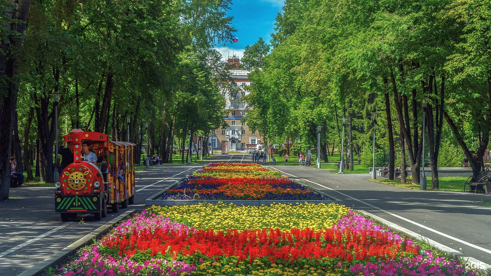
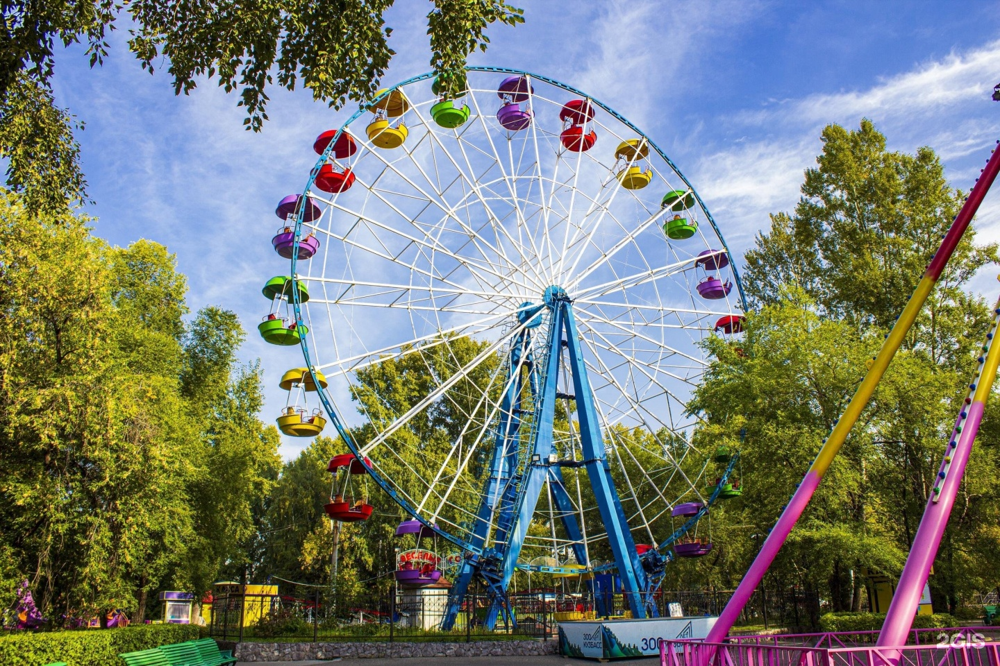
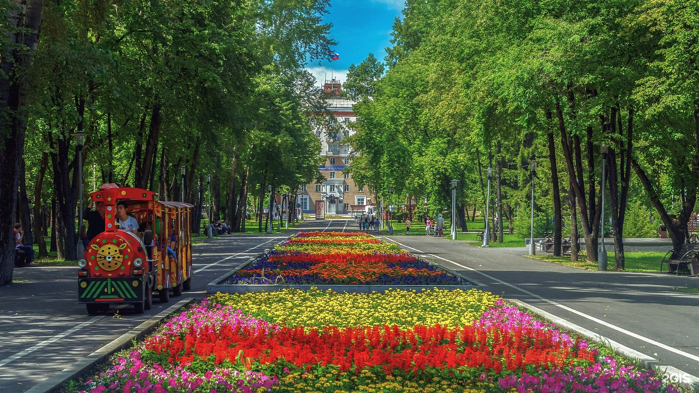
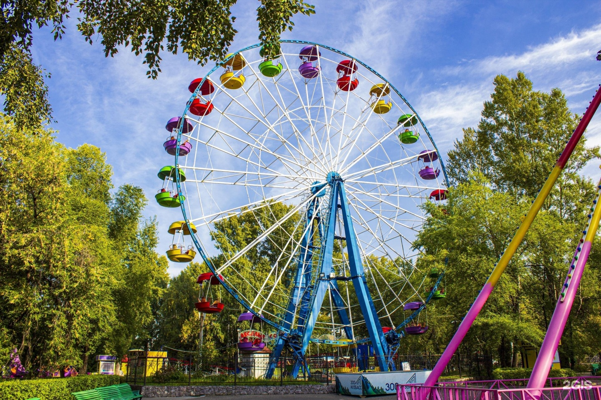
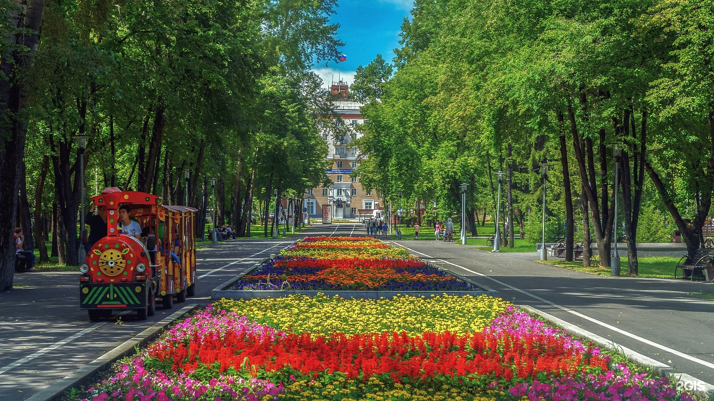
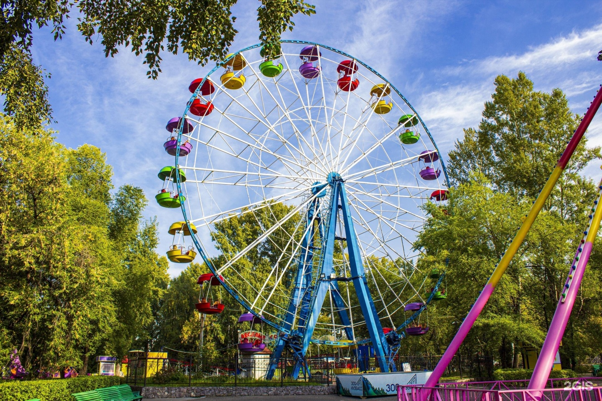
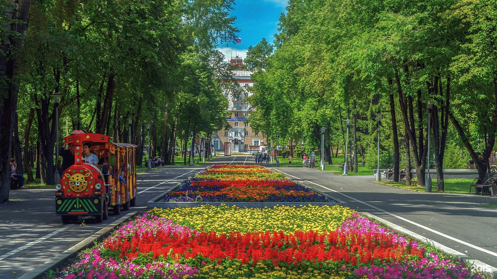
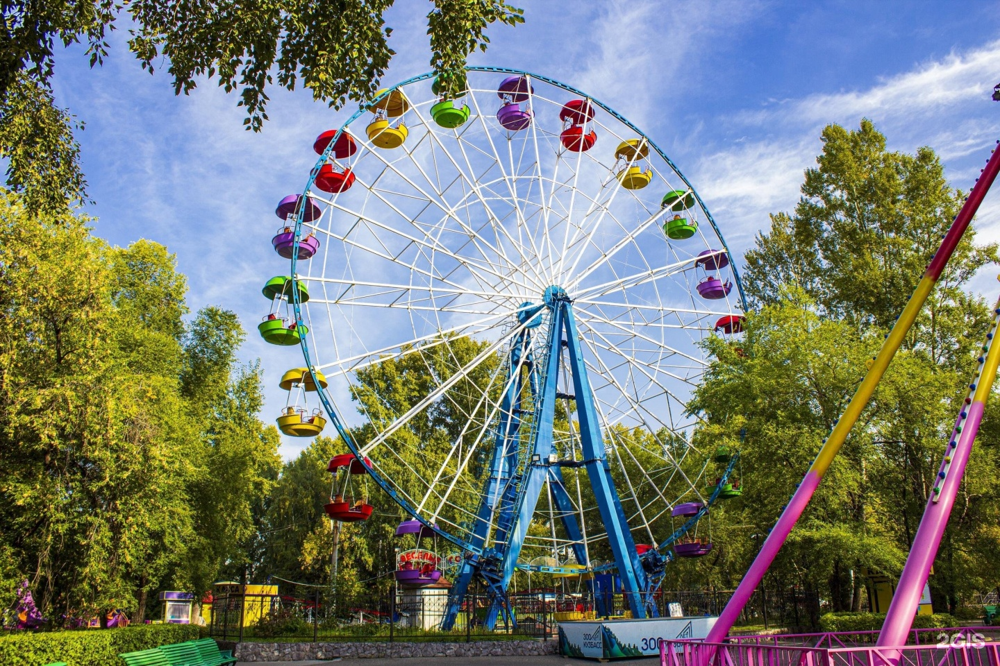

Парк имени Ю. А. Гагарина
 







Парк Гагарина в Новокузнецке был основан в 1961 году, вскоре после полета Юрия Гагарина в космос 12 апреля того же года. В этом же году началось активное благоустройство территории, которая ранее использовалась как заброшенная зона.
В 1962 году парк был официально открыт для посетителей. В процессе его создания были разбиты аллеи, высажены деревья и кустарники, а также установлены памятники и скульптуры, посвященные космосу и достижениям советской науки.
В 1970-х годах парк продолжал развиваться: добавлялись новые элементы инфраструктуры, такие как детские площадки и спортивные зоны. В это время он стал популярным местом для отдыха и проведения культурных мероприятий.
В 1990-х годах парк столкнулся с проблемами, связанными с экономическими изменениями в стране, но в начале 2000-х годов началась новая волна реконструкции. Были проведены работы по благоустройству, обновлению зеленых насаждений и созданию новых зон для отдыха.
Адрес: Спартака 5, Центральный район